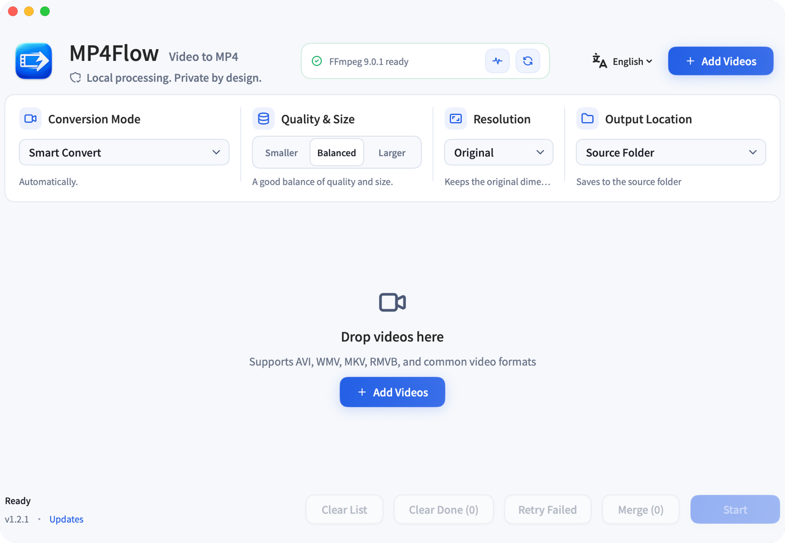

01
智能转换
自动选择合适的 MP4 路径，尽可能直接封装；需要兼容时再使用硬件或软件转码。
兼容、清晰、节省空间MP4FLOW FOR MAC
智能转换，也能剪切、裁切、旋转。把常用的视频处理放进一个轻量、好懂的 Mac 工具。
macOS 13+ · Apple 芯片与 Intel

FOUR TOOLS. ONE CLEAR WORKFLOW.
每个功能都围绕“少设置、看得懂、能完成”设计。需要时编辑，不需要时只管转换。
自动选择合适的 MP4 路径，尽可能直接封装；需要兼容时再使用硬件或软件转码。
兼容、清晰、节省空间拖动时间范围，配合前后步进，找到更准确的起止画面，再导出需要的片段。
精确选择起止范围直接拖动裁切框，或输入位置和尺寸；宽高比选项让常用画幅更容易确定。
拖动、数值、宽高比把方向不对的画面转正；支持 90° 和 180° 旋转，并保持视频画面比例。
90° / 180°，不拉伸能直接封装就不重编码；需要转码时优先使用可用的 Apple 硬件能力。
为 macOS 13+ 设计，支持 Apple 芯片与 Intel Mac，界面和操作都保持轻量。
不登录、不上传；视频始终在你的 Mac 上读取、处理与导出。
FROM FILE TO MP4
拖入文件，或从 Finder 选择素材。
选择智能转换，或在开始前剪切、裁切、旋转。
查看清晰的进度，完成后直接在 Finder 中打开文件。
FREE. OPEN SOURCE. ON YOUR MAC.
下载最新版本。MP4Flow 免费、开源；视频只在你的 Mac 上处理。
macOS 13+ · 需要 FFmpeg 与 ffprobe · 支持 Apple 芯片与 Intel